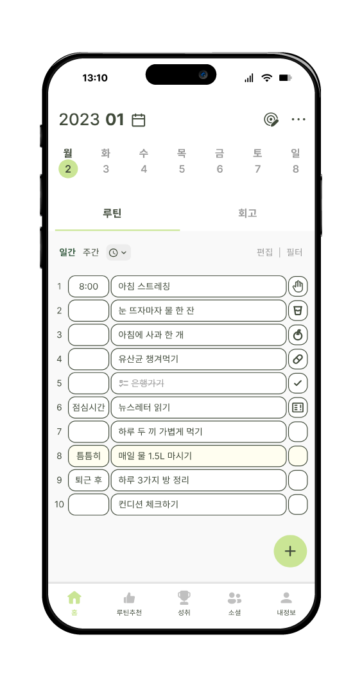

Concep
마이 루틴은 일상의 규칙을 정해 그것을 반복하는 루틴을 계획표로 만들어 그것을 실천하기 위한 앱이기에 정리된 계획표라는 이미지의 초점을 두어 기존의 레이아웃 구성은 유지하데 깔끔하고 실용적인 디자인을 추구하였고 계획을 달성하여 성장하는 모습을 무럭무럭 자라는 나무의 비유하여 나무의 색상을 사용하였습니다.
Needs & Solution
니즈 (Needs)
솔루션 (Solution)
디자인
어느 정도의 여백을 주어 답답함을 해소
디자인을 통일하고 색상을 눈에 좋은 채도로
변경
간결한 이모티콘을 필요한데 만 사용
Logo
.png)
.png)
.png)
.png)
.png)
.png)
.png)
.png)
.png)
Font
- Noto Sans Symbols Regular 17pt
- Noto Sans Symbols Medium 23pt
- Noto Sans Symbols Bold 30pt
Color
85B42B
메인 컬러 - 무럭무럭 자라나는 숲속 나무의 색을 따왔습니다
FFD874
서브 컬러 1 - 햇살의 색을 따왔습니다 나무가 잘 자랄 수 있도록 도와주는 햇빛을 형상화한 색입니다
FFFFFF
서브 컬러 2 - 무엇이든 될 수 있는 사용자들의 색을 따왔습니다 하얀 캔버스처럼 사용자들의 무한한 가능성을 담았습니다
Color

Design System
-
- 디자인에 최적화된 Inter Regular 13pt
- 디자인에 최적화된 Inter Medium 15pt
- 디자인에 최적화된 Inter Bold 24pt
-
- Noto Sans Symbols Regular 17pt
- Noto Sans Symbols Medium 23pt
- Noto Sans Symbols Bold 30pt
404A3A
CAE595
CE5856
FFD874
Component
Select Tag

Default
Active
Select Button
Default.png)
Active.png)
Icon Button
Default.png)
Active.png)
Default.png)
Active.png)
Default.png)
Active.png)
Default.png)


Active.png)


Default.png)
Active.png)
Default.png)
.png)
.png)
Active.png)
.png)
.png)
Function
시작화면
시작시 간단한 설문을 통해 사용자에게 알맞은 루틴을 추천해드립니다


홈일간 주간으로 루틴을 보고 수정 및 확인을 할 수 있습니다



루틴추천3가지 카테고리로 분류하여 다양한 루틴을 추천해드립니다

아침,점심,저녁별로 분류하여 볼 수 있습니다
성취월간통계를 통해 수행한 루틴의 성공률을 알 수 있으며 미션을 통해 받은 뱃지나 스탬프 등을 확인 할 수 있습니다


소셜다른 사용자들의 루틴을 둘러 볼 수 있으며 사용자들간의 커뮤니케이션을 조성합니다


내정보자신의 루틴 일수와 회고 등을 볼 수 있습니다